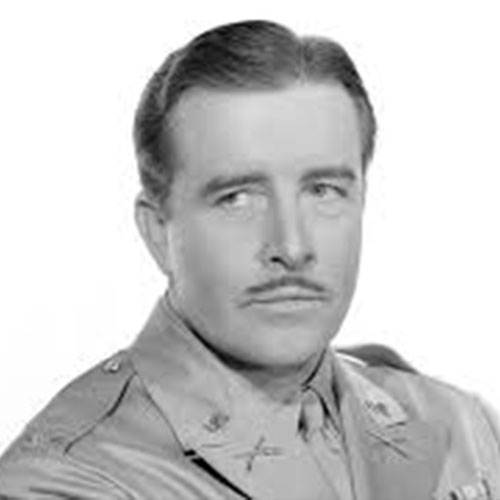
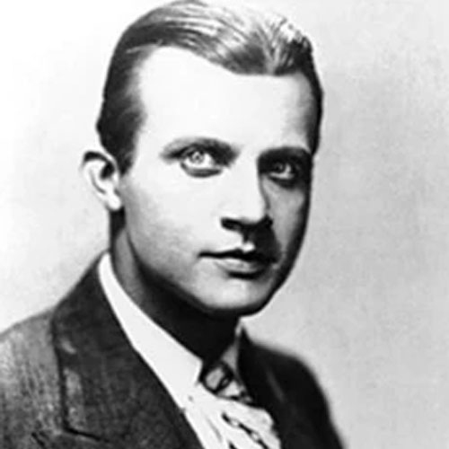
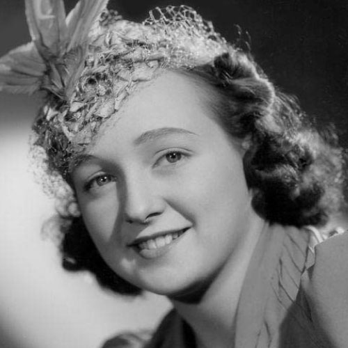
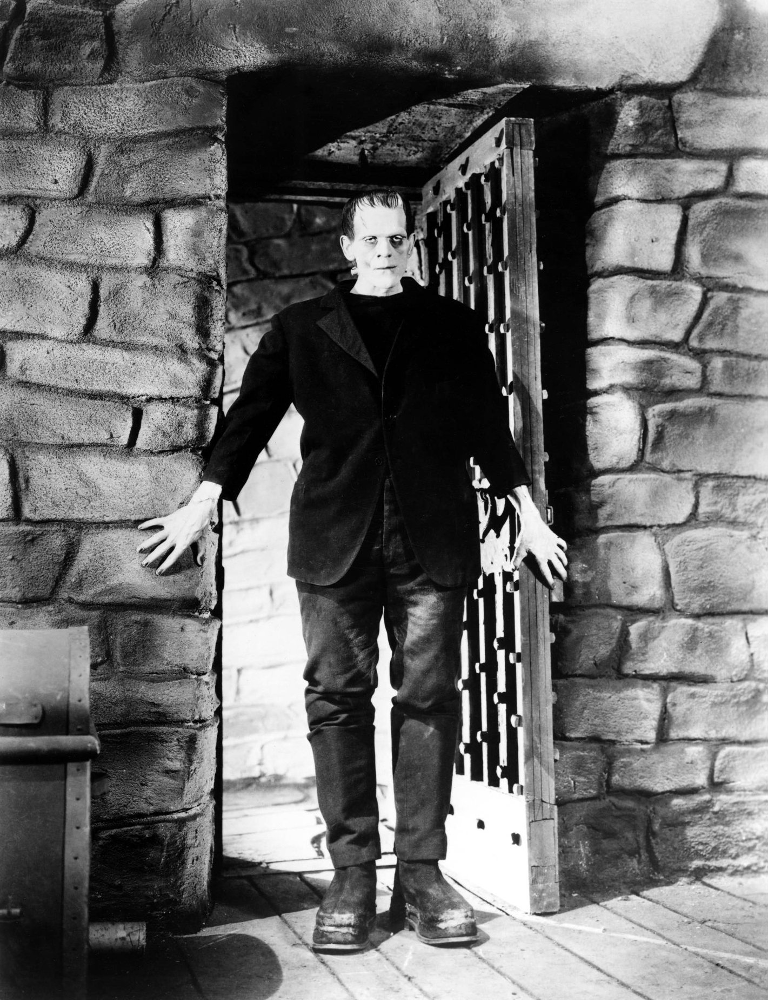
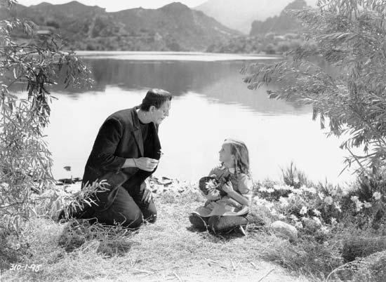
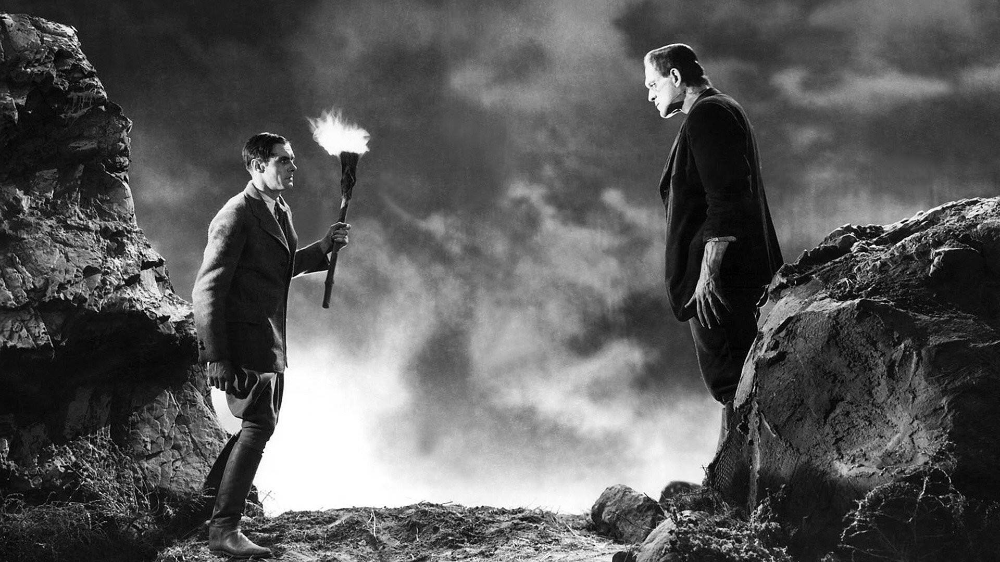
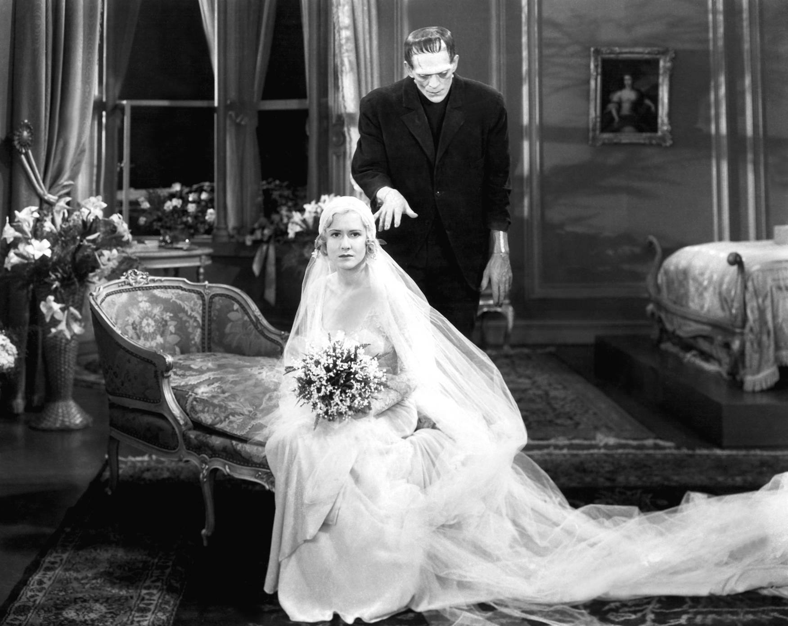
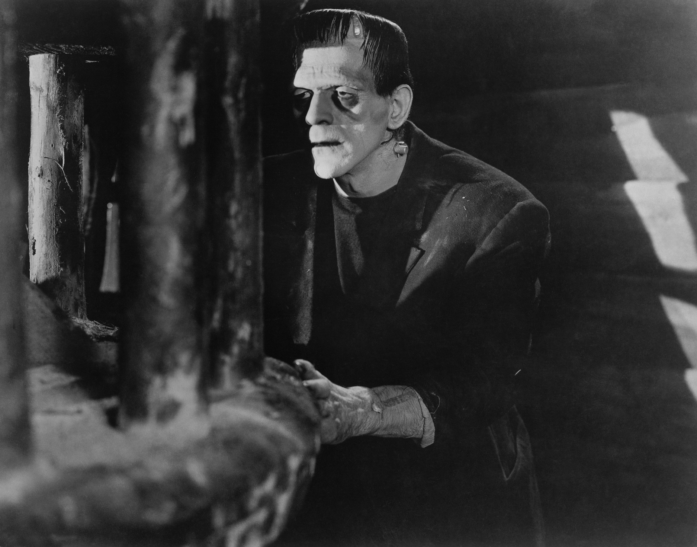
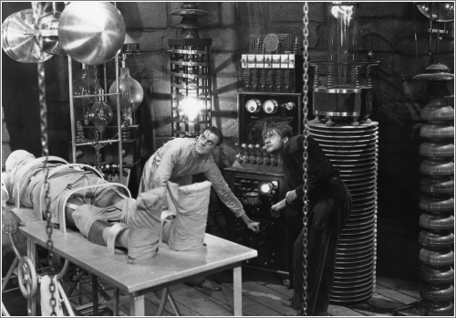
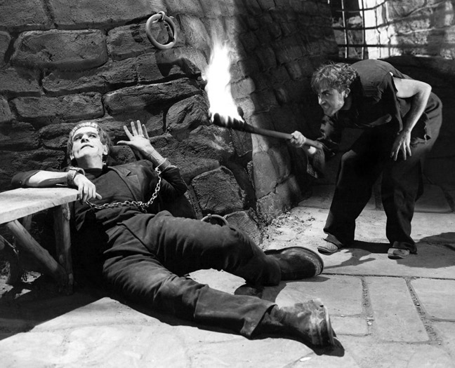

Conocido por sus papeles en películas de terror, especialmente su interpretación del monstruo en "Frankenstein" de 1931. Además, prestó su voz al personaje de "El Grinch" en un especial de Navidad animado en 1966. Karloff es considerado una leyenda del cine de terror y uno de los actores más influyentes del siglo XX.
Colin Clive
Dr. Henry Frankenstein
Actor británico que destacó en el cine clásico de Hollywood en la década de 1930. Es conocido por su papel en "Frankenstein" de 1931, en el que interpretó al Dr. Henry Frankenstein. También actuó en otras películas importantes, como "Journey's End" y "History Is Made at Night". Clive tenía una formación teatral y se unió a la compañía de teatro Old Vic en Londres antes de emigrar a los Estados Unidos en la década de 1930.
Mae Clarke
Elizabeth
Actriz estadounidense conocida por su papel en "Frankenstein" de 1931 como Elizabeth, la prometida del Dr. Frankenstein. Participó en varias películas de la década de 1930 y dejó una impresión duradera en el cine clásico de Hollywood. Recordada por su actuación en la icónica escena de la "creación" del monstruo en "Frankenstein".

John Boles
Victor Moritz
Actor estadounidense conocido por su trabajo en el cine clásico de Hollywood en la década de 1930. Actuó en una amplia variedad de géneros, incluyendo dramas, comedias musicales y películas de romance. Ganó popularidad por su atractivo físico y su voz de barítono. Participó en varias películas destacadas, como "Frankenstein" de 1931, pero también en producciones musicales como "Río abajo" de 1936.
Edward Van Sloan
Dr. Waldman
Actor estadounidense conocido por su papel en películas clásicas de terror de la década de 1930. Interpretó a personajes destacados en "Frankenstein" y "Drácula" de Universal Pictures. Recordado por su presencia autoritaria y actuación convincente. Referente en la historia del cine de terror.

Dwight Frye
Fritz
Actor estadounidense conocido por su trabajo en películas de terror clásicas en la década de 1930. Interpretó a personajes icónicos como Renfield en "Drácula" de 1931 y Fritz en "Frankenstein" de 1931. Recordado por su actuación intensa y a menudo perturbadora en papeles de personajes dementes o inestables. Su contribución al cine de terror lo convierte en una figura memorable en la historia del cine.
Lionel Belmore
Herr Vogel
Actor británico conocido por su trabajo en películas clásicas en la década de 1920 y 1930. Participó en varias películas de terror, como "El doctor X" de 1932 y "La parada de los monstruos" de 1932. Recordado por su versatilidad y habilidad para interpretar personajes secundarios y de reparto en una amplia variedad de géneros cinematográficos. Su contribución al cine clásico lo convierte en una figura destacada en la historia del cine.

Marilyn Harris
La pequeña María
Actriz estadounidense conocida por su papel en "Frankenstein" de 1931. Interpretó a Maria, una niña ciega en la película clásica de terror. Recordada por su actuación conmovedora y con gran impacto emocional en una de las escenas más icónicas de la película. Su contribución a la película y su papel memorable la convierten en una figura destacada en la historia del cine de terror clásico.
Escenas Destacadas

Trama

La creación del Monstruo
La trama principal de la película es la creación del monstruo por parte del doctor Henry Frankenstein y su asistente Fritz. En esta trama se muestra el proceso de recolección de los órganos, la construcción del cuerpo y la llegada de la electricidad que da vida al monstruo.

El monstruo en la sociedad
Una vez que el monstruo es creado, se desata una serie de eventos que lo llevan a interactuar con los humanos. En esta trama se puede ver cómo el monstruo es rechazado por la sociedad y cómo busca un lugar en el mundo.
La persecución del monstruo
Finalmente, la trama de la persecución del monstruo es un elemento importante en la película. El doctor Frankenstein y su amigo Van Helsing buscan capturar al monstruo, mientras que el monstruo intenta sobrevivir en un mundo que lo rechaza.